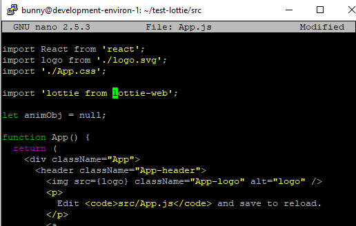

Making a React App to Demo Lottie¶
Customize Your App with a Lottie¶
With a base React App set up, we are ready to modify it. As the landing page for React helpfully tells us, this means editing the App.js file.
Go grab your favorite Lottie from the Lottie library
This means signing up using your chosen method and then browsing the available options. The world can always use a little extra love, so we have chosen the kiss of the heart. Download this and rename it to lottie.JSON for this demo.
Go grab the lottie library for React using:
If you have a React App setup in your own environment, save the JSON file in the source folder “src” as lottie.JSON. If you are following the common development environment on GCP, then follow `Upload your lottie to your VM`_.
Open the App.js file using the your favorite text editor, coding environment, or, if you are using the GCP common dev path, use the SSH connection and utilize the nano editor.
Now we can see some of the inners of our React app.
Note
Nano is a neat little text editor. Make the edit. Crtl 0 writes the change Return accepts the offered filename, overwriting the original Ctrl X closes the nanocd ..
Edit your App.js file to include a call to the Lottie library
Use your SSH connection to the VM to edit App.js using nano:
Then, at the end of the import list add:
..code-block:
import Lottie from 'react-lottie';
Set the variable that will be called:
..code-block:
let animObj = null;
Now, ask for your Lottie
- class App extends React.Component {
- componentDidMount() {
console.log(‘componentDidMount’);
//call the loadAnimation to start the animation animObj = lottie.loadAnimation({ container: this.animBox, // the dom element that will contain the animation renderer: ‘svg’, loop: true, autoplay: true, animationData: animationData // the path to the animation json});
Warning
Nano requires a CTL + O to save your changes Return will accept the suggested file name (and overwrite) CTL + X exits nano
Set Up a Common Environment on GCP¶
1. A Common Development Environment¶
1.1 Create a Virtual Machine (VM) to work on
Assuming you have signed up to GCP and that you are signed in via the console, create a new project with a unique name. This demo will use:
Lottie-1010
Warning
You may use an existing project, however this demo is setup for the novice. Deviate and adjust to your needs.
1.2 Set up a virtual machine from the CLI
Download the software development kit (SDK). Open this up and you will have a CLI (command line interface) with which you can interact with GCP.
Note
Copy/Pasting text into a terminal
Once you have code copied, you right click with your mouse and the paste executes.
Now switch to this project using your project id, for this example that means:
gcloud config set project lottie-1010
Then you can initiate and provision a VM using the following code:
gcloud compute --project=lottie-1010 instances create development-environ-1 --zone=us-central1-a --machine-type=n1-standard-1 --subnet=default --network-tier=PREMIUM --maintenance-policy=MIGRATE --service-account=123338807608-compute@developer.gserviceaccount.com --scopes=https://www.googleapis.com/auth/devstorage.read_only,https://www.googleapis.com/auth/logging.write,https://www.googleapis.com/auth/monitoring.write,https://www.googleapis.com/auth/servicecontrol,https://www.googleapis.com/auth/service.management.readonly,https://www.googleapis.com/auth/trace.append --tags=http-server --image=ubuntu-1604-xenial-v20200317 --image-project=ubuntu-os-cloud --boot-disk-size=10GB --boot-disk-type=pd-standard --boot-disk-device-name=development-environ-1 --no-shielded-secure-boot --shielded-vtpm --shielded-integrity-monitoring --reservation-affinity=any
gcloud compute --project=lottie-1010 firewall-rules create default-allow-http --direction=INGRESS --priority=1000 --network=default --action=ALLOW --rules=tcp:3000 --source-ranges=0.0.0.0/0
Note
If you are warned that you have chosen a small disc size, don’t worry! Press return and continue.
1.3 SH into your VM
You can SSH from the GCP console, but for brevity we will continue to use the CLI. Which means using the following:
gcloud compute ssh --project lottie-1010 --zone us-central1-a development-environ-1
This will open up a new window which is the SSH terminal communicating directly with your VM.

Set Up Your Development Environment¶
NB we are going to use the terminal connection to your cloud machine. Don’t get this confused with other black screens you have open, such as the SDK! Luckily, there is a visual hint that you are using a tunnel:

1.4 Use this SSH connection to interact with your VM.
Update this VM’s environment with:
sudo apt-get update
// ?? .. topic:: 1.5 Tweak your PATH to create a user-controlled directory:
Nano is a text editor, paste in the following (using mouse right click):
1.6 Install Node.js (which will also give you npm).
curl -sL https://deb.nodesource.com/setup_12.x | sudo -E bash -
sudo apt-get install -y nodejs
1.6 Update npm
sudo npm install npm@latest -g